NUMERICAL METHOD FOR SPECIATION AND FORWARD MODELING
The formulation of any chemical equilibrium problem solved by PHREEQC is derived from the set of functions denoted  in the previous sections. These include
in the previous sections. These include  ,
,  , 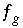
,
, 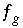
,  ,
,  ,
,  ,
,  ,
,  ,
,  ,
,  ,
,  ,
,  , 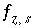
,
, 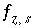
,  , and
, and  , where
, where  and
and  are the simply the mole-balance functions for hydrogen and oxygen and
are the simply the mole-balance functions for hydrogen and oxygen and  refers to all aqueous master species except H
+
, e
-
, H
2
O and the alkalinity master species. The corresponding set of master unknowns is
refers to all aqueous master species except H
+
, e
-
, H
2
O and the alkalinity master species. The corresponding set of master unknowns is  ,
,  ,
,  , 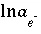
, 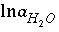
, 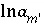
, 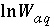
, 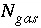
,
, 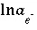
, 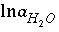
, 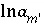
, 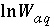
, 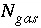
,  (or possibly
(or possibly  in speciation calculations), 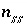
, 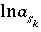
, 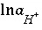
(or possibly
in speciation calculations), 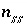
, 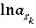
, 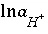
(or possibly  in speciation calculations),
in speciation calculations),  (explicit diffuse-layer calculation),
(explicit diffuse-layer calculation),  , and
, and  (implicit diffuse-layer calculation). When the residuals of all the functions that are included for a given calculation are equal to zero, a solution to the set of nonlinear equations has been found, and the equilibrium values for the chemical system have been determined. (Note that some equations that are initially included in a given calculation may be dropped if a pure phase or gas phase does not exist at equilibrium.) The solution technique assigns initial values to the master unknowns and then uses a modification of the Newton-Raphson method iteratively to revise the values of the master unknowns until a solution to the equations has been found within specified tolerances.
(implicit diffuse-layer calculation). When the residuals of all the functions that are included for a given calculation are equal to zero, a solution to the set of nonlinear equations has been found, and the equilibrium values for the chemical system have been determined. (Note that some equations that are initially included in a given calculation may be dropped if a pure phase or gas phase does not exist at equilibrium.) The solution technique assigns initial values to the master unknowns and then uses a modification of the Newton-Raphson method iteratively to revise the values of the master unknowns until a solution to the equations has been found within specified tolerances.
For a set of equations, 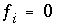
, in unknowns 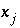
the Newton-Raphson method involves iteratively revising an initial set of values for the unknowns. Let 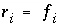
be the residuals of the equations for the current values of the unknowns. The following set of equations is formulated:
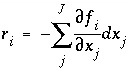
, (83)
where
J
is the total number of master unknowns for the calculation. The set of equations is linear and can be solved simultaneously for the unknowns, 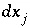
. New values of the unknowns are calculated, 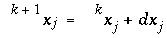
, where
k
refers to the iteration number, after which, new values of the residuals are calculated. The process is repeated until the values of the residuals are less than a specified tolerance.
Two problems arise when using the Newton-Raphson method for chemical equilibria. The first is that the initial values of the unknowns must be sufficiently close to the equilibrium values, or the method does not converge, and the second is that a singular matrix may arise if the chemical reactions for a set of phases are not linearly independent. PHREEQC uses an optimization technique developed by Barrodale and Roberts (1980) to avoid the occurrence of singular matrices. The optimization technique also allows inequality constraints to be added to the problem, which are useful for constraining the total amounts of phases and solid solutions that can react.
The selection of initial estimates for the master unknowns is described for each type of modeling in the following sections. Regardless of the strategy for assigning the initial estimates, the estimates for the activities of the master species for elements or element valence states are revised, if necessary, before the Newton-Raphson iterations to produce approximate mole balance. The procedure for aqueous master species is as follows. After the initial estimates have been made, the distribution of species is calculated for each element (except hydrogen and oxygen) and, in initial solution calculations only, for the individual valence states which were defined. Subsequently, the ratio of the calculated moles to the input moles is calculated. If the ratio for a master species  is greater than 1.5 or less than 10
-5
, the following equation is used to revise the value of the master unknown:
is greater than 1.5 or less than 10
-5
, the following equation is used to revise the value of the master unknown:
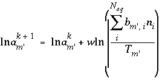
, (84)
where 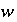
is 1.0 if the ratio is greater than 1.5 and 0.3 if the ratio is less than 10
-5
, and  is the total concentration of an element or element valence state. Analogous equations are used for exchange and surface master species. After revisions to the initial estimates, the distribution of species is calculated. The iterations continue until the ratios are within the specified ranges, at which point the modified Newton-Raphson technique is used. If the successive revisions fail to find activities such that the ratios are within the specified bounds, then a second set of iterations tries to reduce the ratios below 1.5 with no lower limit to these ratios. Whether or not the second set of iterations succeeds, the Newton-Raphson technique is then used.
is the total concentration of an element or element valence state. Analogous equations are used for exchange and surface master species. After revisions to the initial estimates, the distribution of species is calculated. The iterations continue until the ratios are within the specified ranges, at which point the modified Newton-Raphson technique is used. If the successive revisions fail to find activities such that the ratios are within the specified bounds, then a second set of iterations tries to reduce the ratios below 1.5 with no lower limit to these ratios. Whether or not the second set of iterations succeeds, the Newton-Raphson technique is then used.
The optimization technique of Barrodale and Roberts (1980) is a modification of the simplex linear programming algorithm that minimizes the sum of absolute values of residuals (L1 optimization) on a set of linear equations subject to equality and inequality constraints. The general problem can be posed with the following matrix equations:
 . (85)
. (85)
The first matrix equation is minimized in the sense that 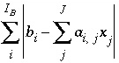
is a minimum, where 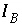
is the number
of equations to be optimized, subject to the equality constraints of the second matrix equation and the inequality constraints of the third matrix equation.
The approach of PHREEQC is to include some of the Newton-Raphson equations in the optimization equations (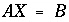
), rather than include all of the Newton-Raphson equations as equalities (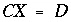
). Equations that are included in the
A
matrix may not be solved for exact equality at a given iteration, but will be optimized in the sense given above. Thus, at a given iteration, an approximate mathematical solution to the set of Newton-Raphson equations can be found even if no exact equality solution exists, for example when forcing equality for all equations would result in an unsolvable singular matrix. The equations for alkalinity, total moles of gas in the gas phase, pure phases, and solid-solution components are included in the
A
matrix. All mole-balance, charge-balance, and surface-potential equations are included in the
B
matrix. Inequalities that limit the dissolution of pure phases, solid-solution components, and gas components to the amounts present in the system are included in the
C
matrix.
In an attempt to avoid some numerical problems related to small numbers in the
B
matrix, a row of the matrix that represents a mole-balance equation is scaled if all coefficients (a column of
A
and
B
) of the corresponding unknown (change in the log activity of the element master species) are less than 1e-10. In this case, the equation is scaled by 1e-10 divided by the absolute value of the largest coefficient. Alternatively, when specified, (
-diagonal_scale in
KNOBS), a mole-balance equation is scaled by 1e-10 divided by the coefficient of the corresponding unknown if the coefficient of the unknown in the mole-balance equation is less than 1e-10.
The scaled matrix is solved by the optimizing solver, and the solution that is returned is a vector of changes to the values of the master unknowns. The values of the changes are checked to ensure that the changes to the unknowns are less than criteria that limit the maximum allowable size of changes. These criteria are specified by default in the program or by input in the
KNOBS data block. If any of the changes are too large, then all the changes to the unknowns, except the mole transfers of pure phases and solid-solution components, are decreased proportionately to satisfy all of the criteria. Pure-phase and solid-solution mole transfers are not altered except to produce nonnegative values for the total moles of the pure phases and solid-solution components. After suitable changes to the unknowns have been calculated, the master unknowns are updated; new molalities and activities of all the aqueous, exchange, and surface species are calculated, and residuals for all of the functions are calculated. The residuals are tested for convergence (convergence criteria are defined internally in the program, but can be switched to an alternate set with the
-convergence_tolerance in
KNOBS or
-high_precision option in
SELECTED_OUTPUT data blocks), and a new iteration is begun if convergence has not been attained.
| Next|| Previous || Top |